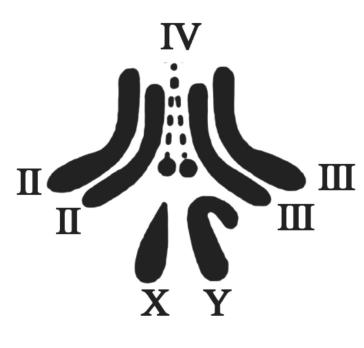

2023年北京市中考生物真题 · 选择题 第16、17、18、19、20题
16. 下列动物行为中属于学习行为的是（ ）
A. 蜘蛛结网B. 青蛙冬眠C. 警犬搜救D. 孔雀开屏
17. 人类精子与卵细胞结合成受精卵的场所是（ ）
A. 卵巢B. 输卵管C. 子宫D. 胎盘
18. 为选育再生稻新品种，我国航天员将再生稻种子带入太空。该育种方式是希望通过射线和微重力等因素的作用，从根本上改变再生稻（ ）
A. 细胞的分裂方式B. 种子的营养物质
C. 细胞的遗传物质D. 种子的形态结构
19. 果蝇是遗传学研究中的模式生物，其性别决定方式与人的相同。下图为某果蝇体细胞中染色体组成图，相关叙述正确的是（ ）

A. 染色体主要由DNA和蛋白质组成B. 果蝇体细胞中有3对染色体
C. 该果蝇为雌性个体D. 该果蝇只产生一种生殖细胞
20. 秋冬季节易发生流行性感冒，下列预防措施不合理的是（ ）
A. 始终紧闭门窗可以保护易感人群B. 佩戴口罩可以切断传播途径
C. 尽量避免聚集可以减少感染机会D. 锻炼身体可以提高抗病能力